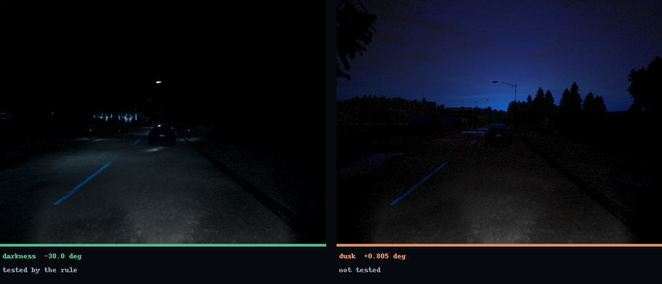

Test driving cannot prove safety.
A test campaign visits finitely many conditions, and the road presents uncountably many. We work with engineers who must validate a driving stack they did not write.

Proving one vehicle beats a human driver would take 275 million failure-free miles. Kalra & Paddock, RAND, 2016